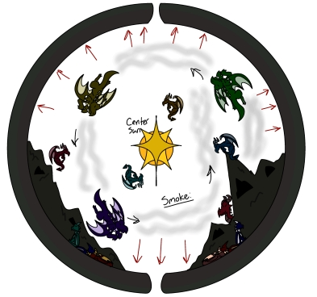
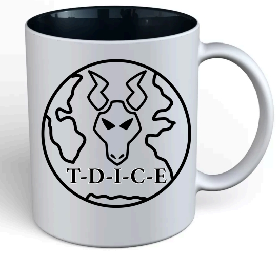

My final project proposal is to create a conspiracy website where I present fictitious evidence to prove that dragons live in the center of the earth, which can partially connect to the hollow earth theory. I would have fake diagrams of the hollow earth where the dragons are and try to present evidence that supports the theory that the dragons are the main cause of both earthquakes and global warming. My website would try to convince people to join the cause in trying to get to the center of the earth which is where the selling part of the project comes in. I'd have a link called, "Pay now to join our cause!" where you would click to essential pay to be a member of the society. I'm so interested in this idea because it's a fun little idea I used to have as a child before I realized dragons weren't real. When I was 7 I used to believe that dragons were real and were hiding underground, which is why I never saw any in real life. Even as I grew up and realized that my belief of dragons being real was false I still found the idea rather funny and always kept it in the back of my mind in case I ever wanted to tell a story about dragons. So now feels like the perfect opportunity to do so and use this fun idea to base my fake website on.
Also, to go into further detail about the fictitious organization behind the website it would be the average conspiracy theory organization. They'll have a founder that started from around the 1980s based in California and the main reason for the website is to try and gain more followers while spreading awareness of their dragon theory. As for the name of this organization, I was thinking of calling it, T.D.I.C.E, which would be an acronym for Tracking, Dragons, Inside, Center, Earth. Though I haven't fully dedicated to that name just yet, it's the one I will most likely end up using for the website. This organization is kind of a joke that tries to take itself way too seriously and I plan to show that on the website by having a section dedicated to all of their "proof" that dragons exist. All of the evidence is going to intentionally look low quality to show the person on the website just how ridiculous the organization. I wanna try and go for the same level of goofy that the show "Ancient Alien" on the History Channel has whenever I watch it.
Finally, how this project could become a "benevolent untruth" is entirely dependent on how I present my organization on the website. The members of this fictitious organization do believe in what they're trying to tell the viewer. They think that dragons exist in the center of the earth and are the main cause of a lot of environmental problems that we have now. Though all of the evidence they have on their website is fake they still have blind faith in their cause and see any lying they do to try and lure in more members as the greater good. In the organization's mind, they believe lying to the viewer is helping both of them get closer to the truth to find real dragons at the center of the earth so they can go down there and somehow stop global warming. Essentially, it's an organization of well-intentioned gullible people trying to lure in more gullible people by lying to them with the idea that they're going to save the world as a result. That is how this project could become a "benevolent untruth" on the organization's behalf at least.

So in conclusion, my proposal for this final project is to create a website hosted by a fictitious organization dedicated to finding dragons in the center of the earth and ending all of the natural disasters and global warming as a result.
Quick look at it before it disappears!!! 